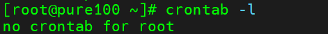
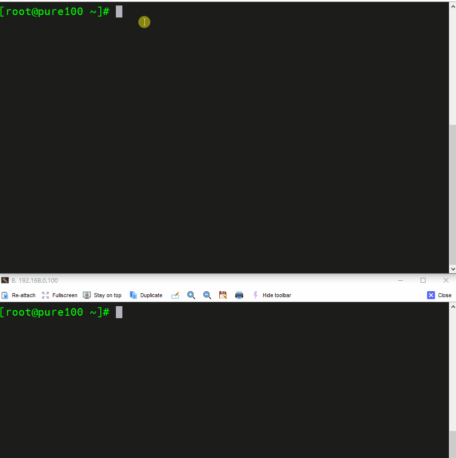

Linux实操-crontab系统定时任务

文章目录
计划任务是需要在指定时间执行的任务或者是周期性执行的任务，比如凌晨3点重启设备，每周对日志文件备份等。
crontab 定时任务设置
基本语法
|
|
选项说明
| 选项 | 说明 |
|---|---|
| -e | 编辑crontab 定时任务 |
| -l | 查询crontab 任务 |
| -r | 删除当前用户所有的crontab 任务 |
参数说明
|
|
进入crontab 编辑界面。会打开vim 编辑你的工作
* * * * * 说明
| 项目 | 含义 | 范围 |
|---|---|---|
第一个* |
一小时当中的第几分种 | 0-59 |
第二个* |
一天当中的第几小时 | 0-23 |
第三个* |
一个月当中的第几天 | 1-31 |
第四个* |
一年当中的第几月 | 1-12 |
第五个* |
一周当中的星期几 | 0-7（0 和7 都代表星期 日） |
特殊符号
| 特殊符号 | 含义 |
|---|---|
* |
代表任何时间。比如第一个*，就代表一小时中每分钟都执行一次的意思 |
, |
代表不连续的时间。比如0 8,12,16 * * * 命令，就代表在每天的8 点0 分，12 点0 分，16 点0 分都执行一次命令 |
- |
代表连续的时间范围。比如0 5 * * 1-6 命令，代表在周一到周六的凌晨5 点0 分执行命令 |
*/n |
代表每隔多久执行一次。比如*/10 * * * * 命令，代表每隔10 分钟就执行一遍命令 |
特定时间执行命令
| 时间 | 含义 |
|---|---|
45 22 * * * 命令 |
每天22 点45 分执行命令 |
0 17 * * 1 命令 |
每周1 的17 点0 分执行命令 |
0 5 1,15 * * 命令 |
每月1 号和15 号的凌晨5 点0 分执行命令 |
40 4 * * 1-5 命令 |
每周一到周五的凌晨4 点40 分执行命令 |
*/10 4 * * * 命令 |
每天的凌晨4 点，每隔10 分钟执行一次命令 |
0 0 1,15 * 1 命令 |
每月1 号和15 号，每周1 的0 点0 分都会执行命令。注意：星期几和几号最好不要同时出现，因为他们定义的都是天。非常容易让管理员混乱。 |
实操案例
查询定时任务
|
|

设置定时任务
每隔一分钟向，pure/text.txt文件中添加一个 11 的数字
|
|
添加如下内容
|
|
实时监控/pure/text.txt
|
|

文章作者 Pure3417
上次更新 2023-05-31